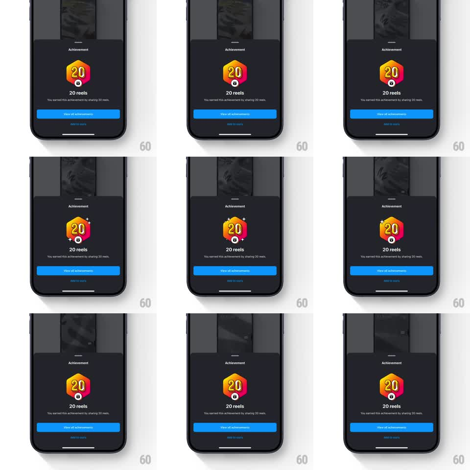

Media
Frame-by-frame

Rebuild this animation 1:1: Instagram's achievement sheet - a dark bottom sheet over the profile showing a gradient hexagon badge ("20 reels") with a looping light-sweep shimmer and intermittent sparkling stars, above a View all achievements button.

Rebuild this animation 1:1: Instagram's achievement sheet - a dark bottom sheet over the profile showing a gradient hexagon badge ("20 reels") with a looping light-sweep shimmer and intermittent sparkling stars, above a View all achievements button.
## Integration
Integration: stack-agnostic spec - springs given as stiffness/damping, timed motions as duration + curve; map every value to your framework and animation library of choice.
## Scene
Dark sheet (rounded top corners, grabber) over a dimmed profile grid. Small "Achievement" label, then the badge: a hexagon with a pink-orange-yellow gradient, large white "20" and a small reel icon pinned at its bottom point. Below: "20 reels" title, explainer line ("You earned this achievement by sharing 20 reels."), full-width blue "View all achievements" button, and an "Add to story" text link.
## Motion spec
Pattern: shimmering badge with sparkle accents.
- Sheet entrance: slides up (translateY 100% to 0, spring stiffness ~300, damping ~28) while the badge scales 0.6 to 1.0 with a bounce (spring stiffness ~340, damping ~18).
- Shimmer: a diagonal light band sweeps across the badge gradient every ~2.5s (mask translate -120% to +120%, 900ms, ease-in-out).
- Sparkles: 4-point stars pop around the badge at randomized positions - scale 0 to 1, hold 100ms, scale to 0 (~400ms each), two or three at a time, a few times per shimmer cycle.
- The badge also breathes: scale 1.0 to 1.03 and back, 2.5s sine.
## Calibration
- Shimmer travels across the badge only, clipped to the hexagon - a full-sheet sweep reads as a loading state.
- Sparkles accent the badge edges; none over the number.
## Reduced motion
Static badge; no shimmer, sparkles, or breathing; sheet entrance is a 200ms fade.
## Don't miss
- The reel icon is pinned to the badge's bottom vertex, overlapping it - part of the badge, not the title.
- The sheet is dark; the badge gradient is the only saturated element.